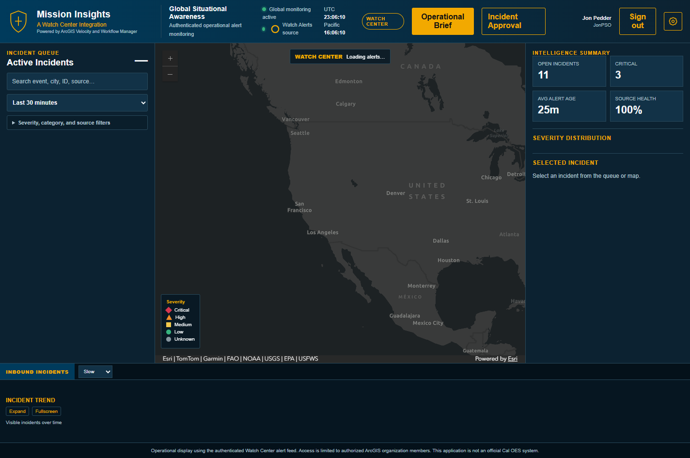
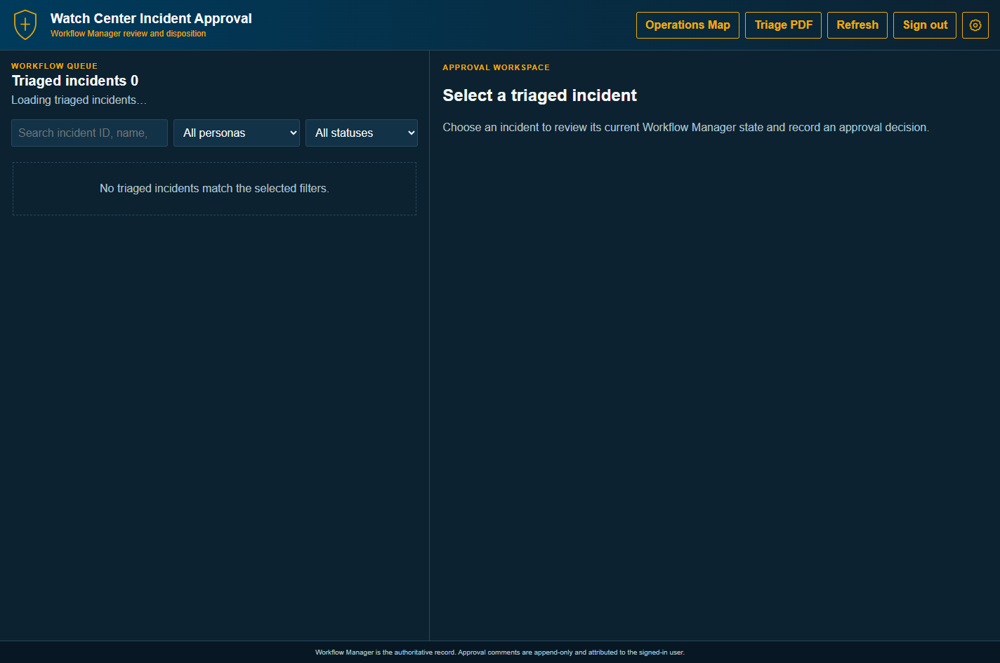

Settings templates
Export the current draft as a portable JSON template, or import a previously exported template for review before saving.
App branding
Set the agency-preferred application name, subtitle, and header logo. Use an HTTPS image URL or upload a PNG, JPEG, GIF, or WebP image up to 300 KB.
Default shield logo
Configure the shared application palette. Changes preview below before saving.
Main app tab labels
Rename the Operations Map and Incident Approval navigation tabs shown across the main application.
Filter defaults
Choose the incident time range applied when the Operations Map first opens. Operators can still change the filter during a session.
Status colors
Colors used by workflow status indicators in the Incident Approval queue.
Severity Colors
Colors used for incident severity throughout the Operations Map and Incident Approval pages, including the severity gauge, incident list, and approval priority control.
Triage persona names
Rename persona labels without changing their Workflow Manager status membership.
Incident icons
Choose an original or standard marker, enter an HTTPS image URL, or upload a PNG, JPEG, GIF, or WebP image up to 300 KB. Every draft symbol is previewed below before it is saved.
Button labels
Change labels used throughout the Operations Map and Incident Approval pages.
Timing
Apply for review activates this draft temporarily in the current browser tab so you can review it across the app. Only Save settings commits the configuration.
Mission Insights operator guide
Mission Insights is an authenticated Watch Center application for monitoring operational alerts, evaluating their location and severity, and managing incident review through ArcGIS Workflow Manager. It combines the live alert queue, an ArcGIS map, situational summaries, and a controlled triage and approval process.
Primary pages
- Operations Map: discover, filter, map, and initially triage incoming alerts.
- Incident Approval: review Workflow Manager jobs and record an approval disposition.
- Settings: adjust presentation, labels, symbols, timing, and open this guide.
Workflow Manager is the authoritative system of record. Notes and structured audit events are attributed to the signed-in ArcGIS user.
Using the Operations Map
- Filter the incident queue. Use the age selector, search box, and severity, category, and source filters to reduce noise.
- Select an alert. Choose a queue card or a map symbol. The selected alert's details appear in the Intelligence Summary panel.
- Validate context. Review severity, source, location, watch area, start time, and description. Use Zoom to inspect map context and Source to open the originating alert.
- Decide whether to triage. Only alerts explicitly updated in the Incident triage section become Workflow Manager jobs and appear in Incident Approval.

How to initially triage an incident
- Select the incident from the queue or map and read the full description.
- Verify the source. Open the source link when available. Look for corroboration, recency, specificity, and signs that the alert is a duplicate or stale.
- Check location and impact. Use Zoom and the map to confirm proximity to monitored areas, facilities, transportation routes, or population centers.
- Set priority. Use Critical for immediate or potentially catastrophic operational impact; High for serious and time-sensitive impact; Medium for credible events requiring monitoring; and Low for limited impact or awareness-only items.
- Set workflow status. Use New or Ready for an initial handoff, In Progress while actively investigating, Pending when ready for review, and On Hold when blocked or awaiting information.
- Add a useful note. Record what was verified, the expected operational effect, uncertainties, and the recommended next action. Do not paste sensitive information that is not authorized for the system.
- Select Update incident. The app creates or updates the Workflow Manager job, claims its current step when needed, and writes append-only audit entries.
- Confirm the save. Wait for the green confirmation. Use Audit trail to verify the recorded changes or Incident PDF for a report.
Suggested first-note format
How to use Incident Approval
- Open Incident Approval from the header. Sign in if prompted.
- Find the job. Search by incident ID, name, location, status, assignment, or priority. Persona and status filters narrow the queue.
- Select a triaged incident. Review the status, priority, current workflow step, alert ID, watch area, location, assignment, and description.
- Review history. Read prior triage and approval events before making a decision. If information appears stale, use Reload.
- Choose a decision and priority. Confirm that the selected priority still reflects the latest known operational impact.
- Write an approval note. A note is required. State the evidence considered, rationale, conditions or follow-up, and any remaining uncertainty.
- Select Record decision. Wait for “Decision saved.” The change is attributed to your signed-in account and appended to the audit history.

Rejecting or returning incidents
Return to triage (Revised)
- Select Return to triage when the incident may still be actionable but the record is incomplete or inaccurate.
- Set the best currently supported priority; do not preserve an inflated priority merely because it was submitted that way.
- In the required note, identify each correction needed, the evidence or verification required, and who should act next.
- Select Record decision, wait for confirmation, and verify that the history shows a change to Revised.
Example note: Returned for location confirmation and source corroboration. Current report conflicts with mapped coordinates. Triage analyst should verify the affected facility and attach or cite a second source before resubmission.
Reject and close (Closed)
- Select Reject and close only when no further triage or approval action is warranted.
- Confirm the incident is invalid, duplicate, outside scope, stale, or otherwise non-actionable.
- State the specific rejection reason and, for duplicates, reference the retained incident ID when known.
- Record the decision and verify the Closed status in the queue or audit history.
Example note: Rejected as duplicate of ALERT-12345. The retained incident contains the current source material and operational updates; no separate action is required.
Troubleshooting common approval errors
Audit trail and reports
- Audit trail: opens the complete incident history with local time, user, event, changed values, and notes. Audit records are append-only in the app.
- Incident PDF: creates a single-incident triage report with workflow state and history.
- Triage PDF: on Incident Approval, creates a report of active triage jobs.
- CSV / JSON: available in the Operations Map audit dialog for detailed analysis or transfer to an approved records process.
Always verify the report's incident ID, generation time, and signed-in user before distributing it. Follow organizational handling and retention rules.
Configuration settings
The Configuration tab changes the app's browser-stored presentation settings. You can customize status colors, persona names, incident symbols, button labels, ticker speed, and alert refresh frequency.
- Save settings applies the current draft. Other open app pages update automatically.
- Discard changes reloads the last saved settings.
- Reset to base defaults removes all custom settings.
- Export / Import template transfers configuration as JSON for review and reuse.
Quick reference checklist
- Confirm you are signed in as the correct user.
- Filter by recent, relevant alerts.
- Open and assess the source.
- Confirm map location and watch area.
- Check for duplicate incidents.
- Assign a defensible priority.
- Use a status that matches the handoff.
- Write a clear triage or approval note.
- Wait for the saved confirmation.
- Verify the audit trail when the decision is significant.
If a save fails: keep your note text, check connectivity and sign-in state, reload the incident, confirm it was not updated by another operator, and retry once. Escalate persistent Workflow Manager errors to the application administrator.